How to run a day with the app, from a new booking to clean totes back on the shelf. Screenshots use test data.
Your day at a glance
7:00 AM
Morning email and phone alert: what's due today. On quiet days, a short "Nothing due today" email with the next few stops.
9:00 AM
Send the day's texts (Dashboard or Reminders). A nudge comes if any are still unsent.
Stops
Tap On the way as you leave, then Delivered or Picked up when it's done. An alert comes about an hour before each stop that has a time.
After pickup
Wash the totes and tap All clean on Inventory.
6:00 PM
Send review asks. A nudge comes if any are still unsent.
The Dashboard is home base. Needs you at the top lists anything waiting: requests, late pickups, totes to clean, partner follow-ups, trips to log. Tap a line to go fix it.
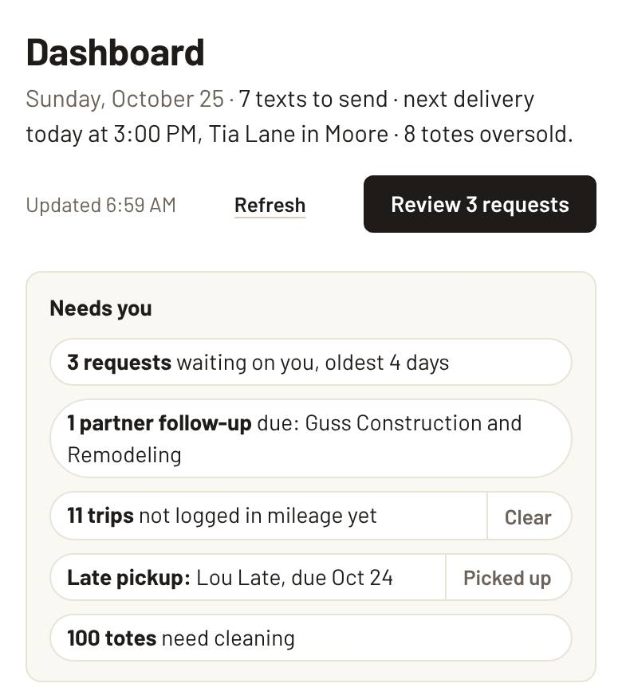
1. A new booking request comes in
You get a phone alert. The request waits on the Requests page.
Open Requests. Check the Stock line: green means you have the totes, red means you're short on those dates.
Tap Text to confirm. Messages opens with the text and a confirm link filled in. Send it.
Back in the app, tap Yes, sent. The request moves to Awaiting customer.
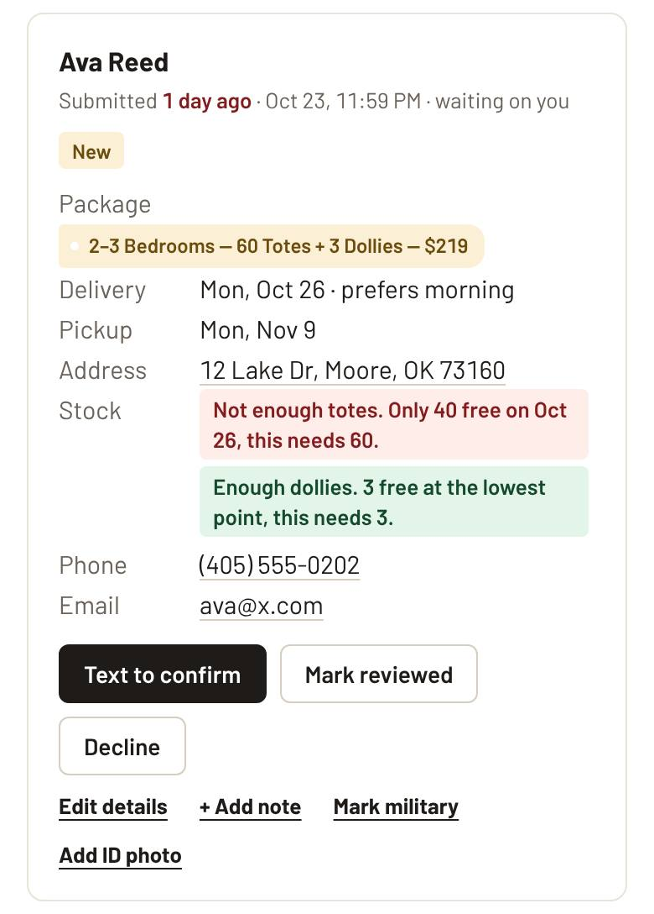
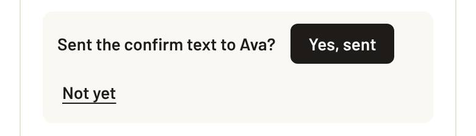
When the customer taps the link and confirms:
Standard booking (regular package, 2 weeks, no rush, no military or promo discount, full address, totes free): the invoice is emailed right away and they get a Pay now button on the spot. You get a Booking confirmed and invoiced alert. Nothing else to do.
Anything else: you get a Booking confirmed alert with the reason, and the request shows Confirmed for you to invoice (step 2).
If they reply YES by text instead, tap Mark confirmed yourself. Automatic invoices can be turned off on App & alerts.
Can't do it? Tap Decline and pick a reason. Not sure yet? Mark reviewed keeps it on your list without a reply.
2. Send the invoice
Only needed when it wasn't invoiced automatically (step 1).
On the confirmed request, tap Create invoice. Send Invoice opens with everything filled in from the request.
Check the package, dates, address and Total price. Rush fee, military and partner discounts are worked out for you.
Tap Review and send, check the preview, and send. The customer gets the invoice email with a Stripe pay button, and the rental is added to your list.
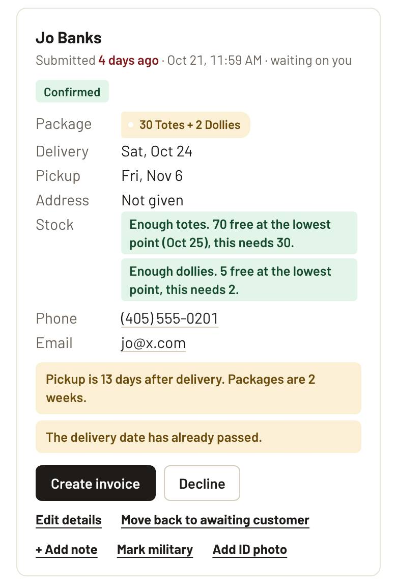
Customer wants more time? On All Rentals, open their rental and tap Extend rental. Send Invoice fills in the extension (starting on their pickup day, 2 more weeks). The totes count once, the first rental gets no pickup and the extension no delivery. If you start on Send Invoice instead, it asks "Is this an extension?" when that customer still has totes out.
Paid another way, or an old rental? Use Add Rental (Send Invoice, "Log only, no email"). It adds the rental without emailing anyone.
3. Send the day's texts (9 AM)
Delivery and pickup reminders, address checks and payment nudges. They come from your own phone number, so replies land in your Messages.
On the Dashboard (Texts to send today) or the Reminders page, tap Text [name]. Messages opens with the text ready.
Send it, come back, and tap Yes, sent. It drops off the list. Changed your mind? Tap Undo.
Don't need one? Tap Skip.
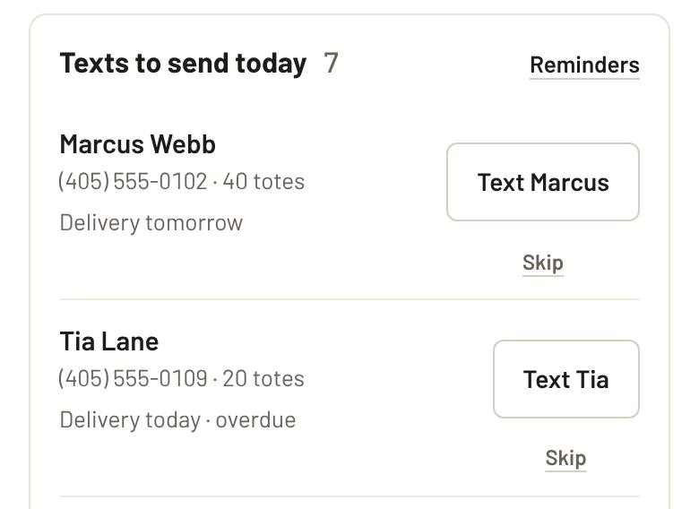
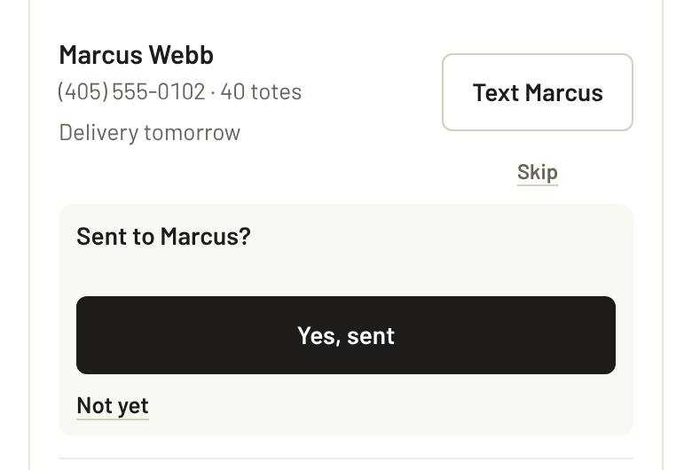
Anything you miss stays on Reminders, marked Overdue, until it's sent, skipped, or too late to matter. Review asks show up 3 days after pickup; send those around 6 PM.
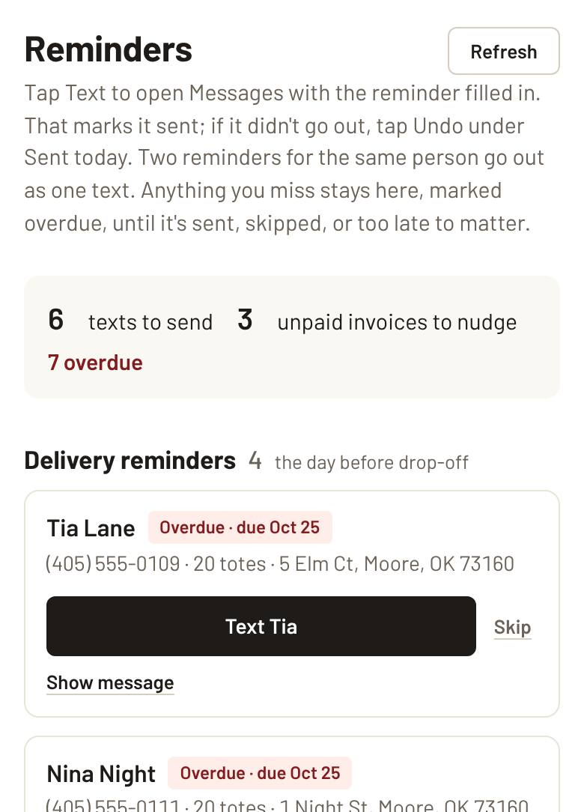
4. Delivery and pickup day
Today's stops are on the Dashboard under Next 7 days. Tap the address to open Maps, or the name to call.
Leaving for a stop? Tap On the way. The app works out your arrival time and fills in a text to the customer. Send it.
Totes dropped off? Tap Delivered. Totes collected? Tap Picked up. Each has an Undo.
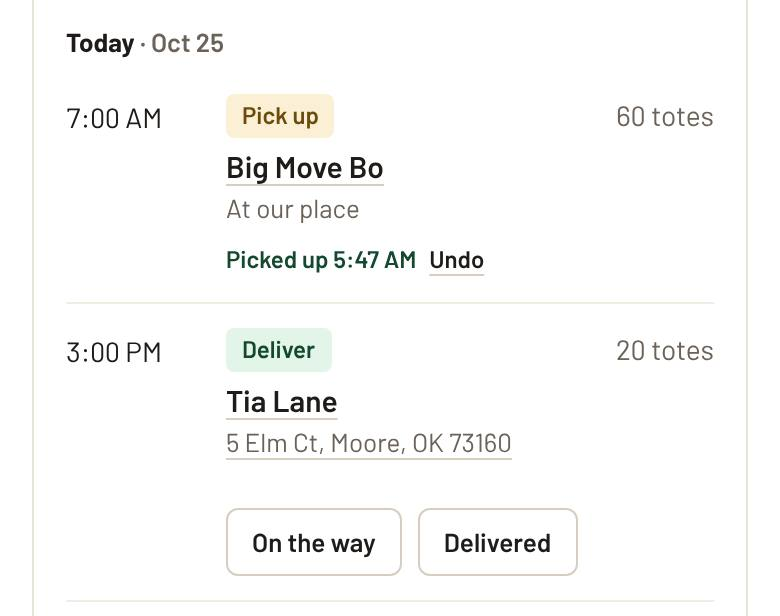
Why tap them? The trip's round-trip miles from home are logged on Finance for you (Undo takes it back), marked stops stop sending reminder texts and alerts, the tote counts stay right, and a pickup that's past its time without Picked up shows as a Late pickup in Needs you.
5. Getting paid
Paid with the Stripe button: it's marked paid on its own, and you get a phone alert.
Paid cash, Venmo or check: tap Mark paid on the Dashboard's Unpaid invoices (or on All Rentals).
Still not paid? The app lines up a friendly follow-up text 3 days after the invoice, then a payment reminder from day 5. Email reminder sends one by email.
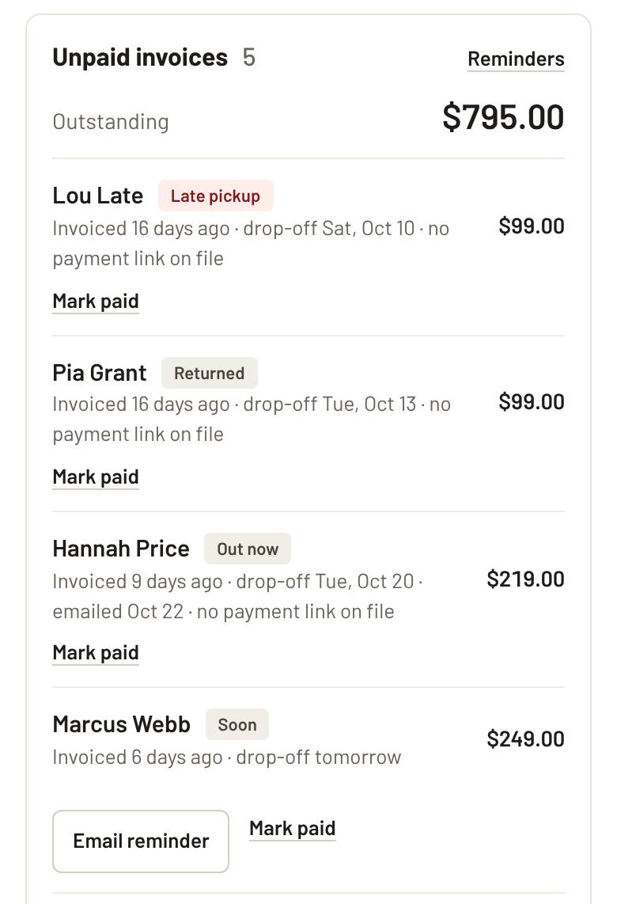
6. Cleaning totes after a pickup
Every rental that comes back shows under Tote cleaning at the top of Inventory until it's washed.
Washed them all? Tap All clean.
Washed only part of a big return? Tap Some, type how many are done so far, and tap Save. The row shows how many are left.
Mis-tap? Tap Undo in the green bar, or next to the name under Washed today.
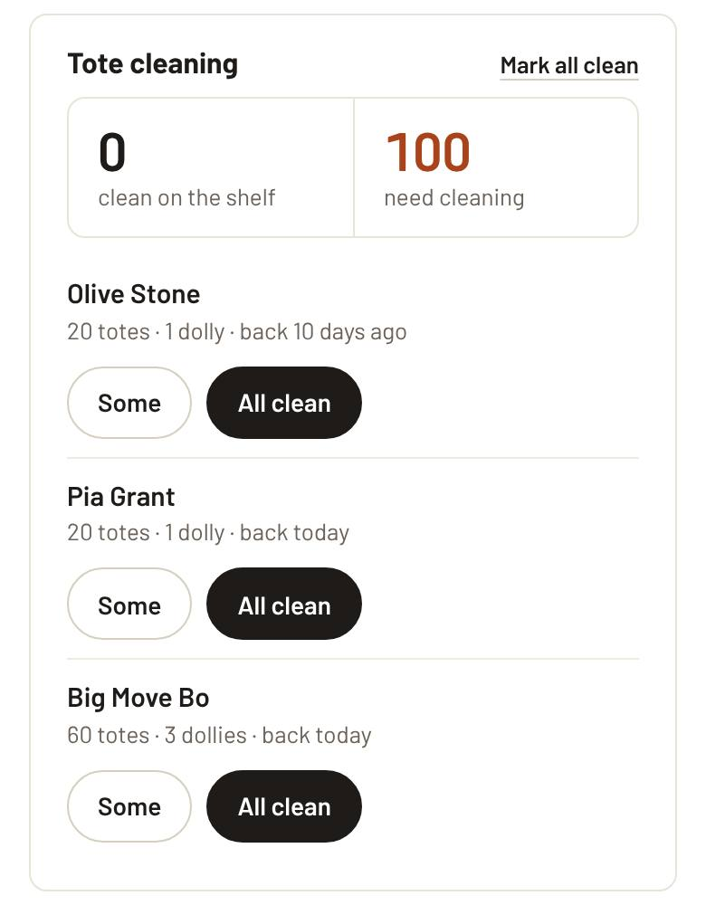
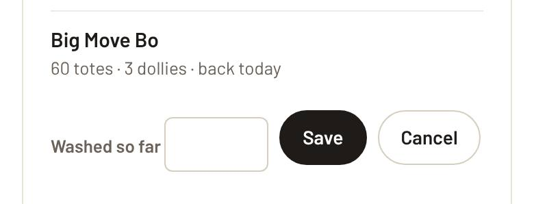
7. Logging a stock change
Rentals move totes in and out on their own. This is only for the totes you own changing: new ones bought, broken, lost, or worn out.
On Inventory, scroll to Log a stock change. Pick Totes or Dollies.
Set the date, what happened, and how many. Add a note if it helps (an order number, which customer).
Tap Add stock change. It shows in History, where you can delete it if it was a mistake.
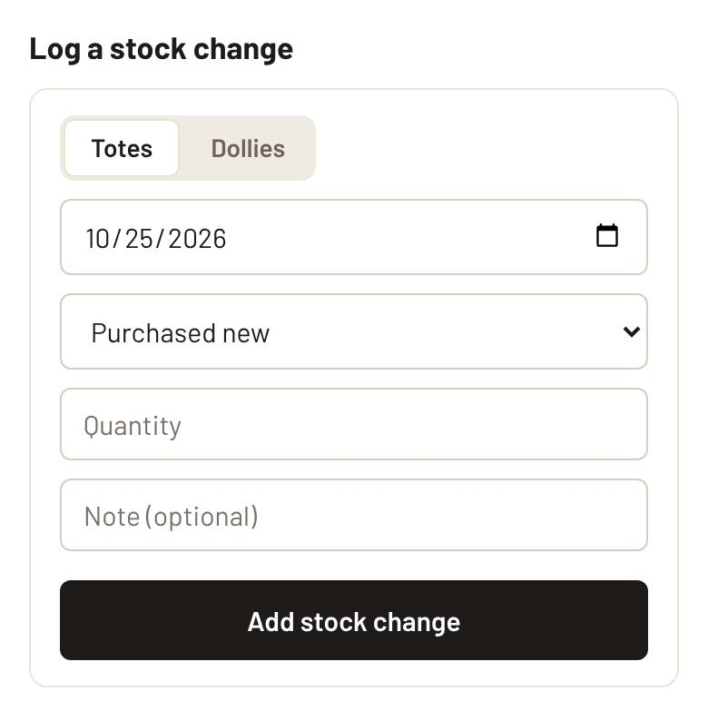
Free today is totes you can still book today. Out with customers is totes at customers' homes right now. The 60-day chart shows what's free each day ahead; tap a day to see who has totes out.
The other pages
All Rentals: find any rental, edit it, cancel it, add photos, and see what's next for it.
Contacts: everyone who rented or asked, with their history, what they owe, and Text / Email buttons.
Finance: money in and out, expenses with receipt photos, mileage (on the Mileage tab, tap a delivery or pickup that isn't logged yet to fill it in), and a tax set-aside. Download a year for your accountant.
Outreach: partners like movers, realtors and remodelers, with follow-up reminders and partner discount codes.
App & alerts: put the app on your Home Screen and pick which phone alerts you get. Each phone is set up on its own.
If something's off
No morning email by 7:30 AM
It should come every day, even quiet ones. Check spam first; if it's not there, something's wrong, so get it looked at.
Numbers look stale
Tap Refresh at the top of the page.
The app asks you to sign in
Sign-ins last 30 days. Sign in again and you're back where you were.
Tapped the wrong thing
Almost every action has an Undo right after, in the green bar or next to the item.
No phone alerts
Open App & alerts on that phone and make sure notifications are on. On iPhone, the app has to be opened from the Home Screen icon.